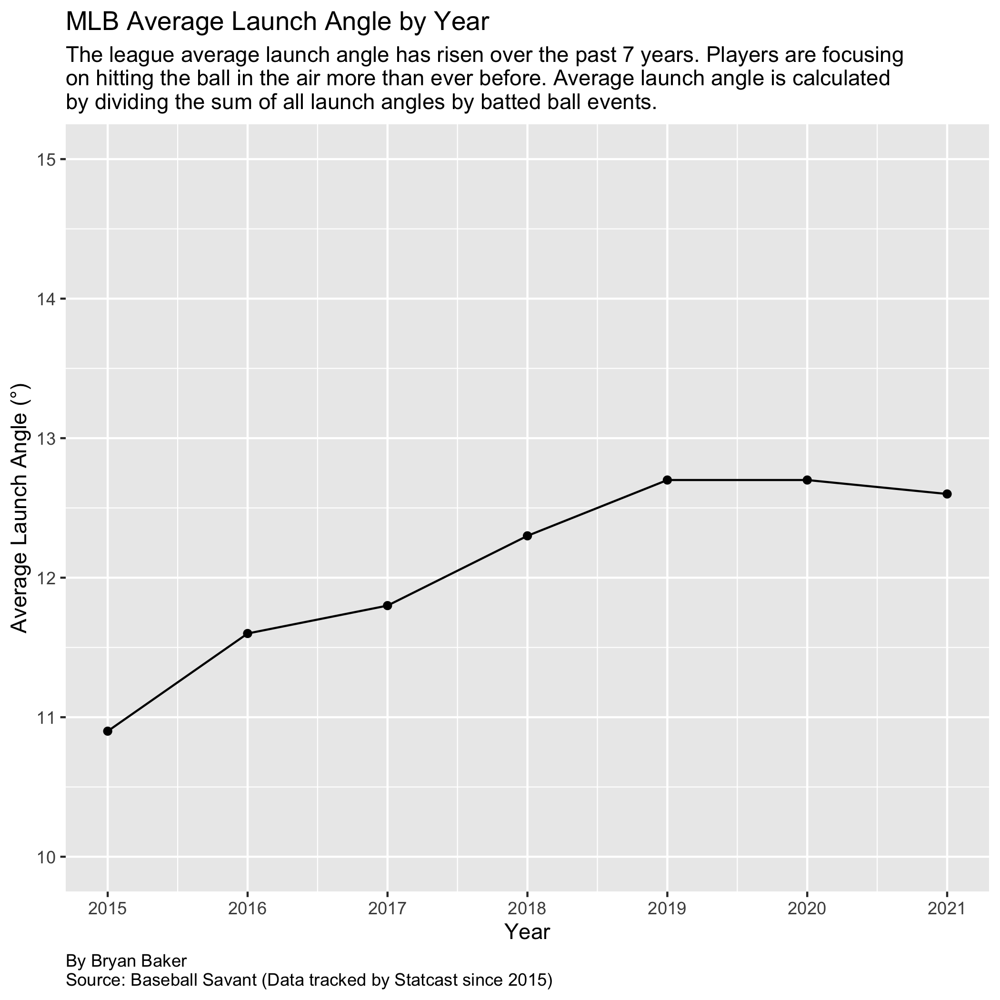
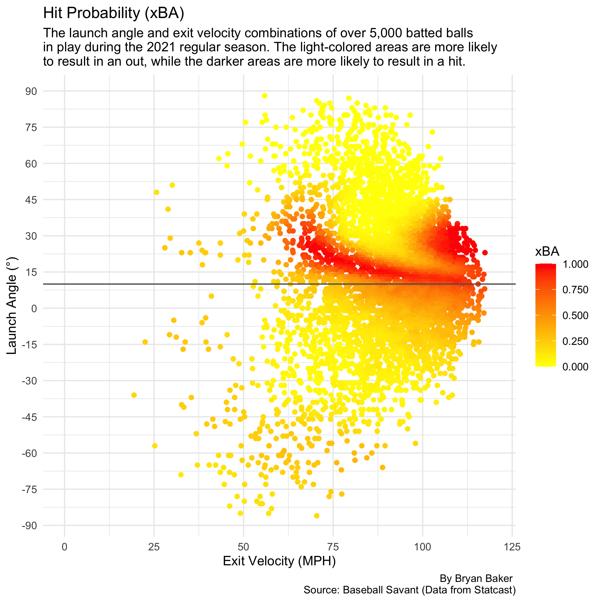
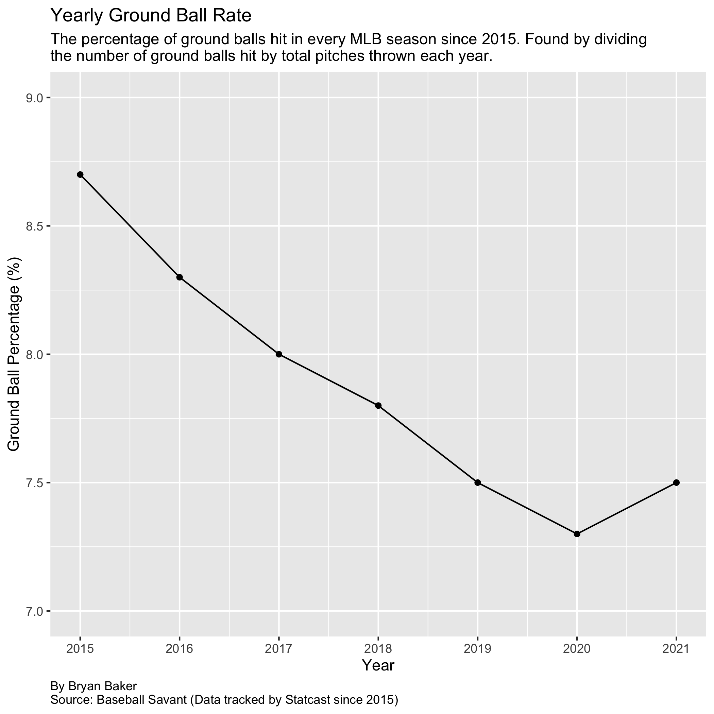
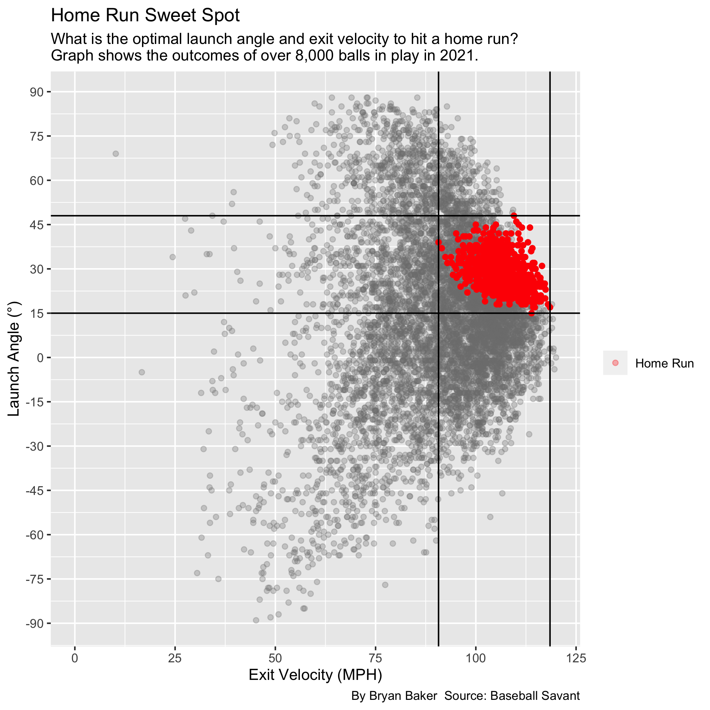

Major League Baseball's average launch angle increased by almost two degrees in seven years. The data suggests that players are focusing on hitting the ball in the air more than ever before.
Launch angle represents the vertical angle at which the ball leaves a player’s bat after being struck. Every batted ball is classified based on its launch angle. A launch angle less than 10 degrees is a ground ball, between 10 and 25 degrees a line drive, between 25 and 50 degrees a fly ball, and greater than 50 degrees a pop up.
Major League Baseball began tracking launch angle data in 2015 when they started using Statcast. Statcast uses multiple cameras and radar technologies to collect and analyze data on every batted ball in play.
Since this data became available, Major League hitters have focused on hitting the ball in the air because they are more likely to record a hit. Using expected batting average, also known as hit probability, hitters can measure the likelihood that a batted ball will become a hit using two factors: launch angle and exit velocity.
Every point below the gray line is a ground ball. Ground balls must be hit significantly harder than line drives to become hits. There is a direct correlation between hit probability and exit velocity, the speed of the ball off the bat. No surprise here. Hitting the ball hard increases your chance of getting a hit.
Players are more likely to record a hit when they keep the ball off the ground. In 2021, over 2,000 ground balls had an average hit probability of .255. The average hit probability of line drives and fly balls nearly doubled that number.
Hitters have caught on to this trend. Ground ball percentages have consistently decreased since this data became available in 2015.
Lloyd Smith, a sports science laboratory director at Washington State University, said high launch angles can be achieved without changing a player’s swing path.
“Some hitters will swing up and some will swing flat,” Smith said. “But those two batters could have the same launch angle.”
The angle of impact on a baseball is what matters most when it comes to launch angle. Players try to hit the bottom half of the ball to lift the ball in the air. Hitting the top half of the ball produces a negative launch angle, or a ground ball.
Hitting the bottom half of the ball produces a higher launch angle. Higher launch angles typically produce the best results, but only to a certain extent. In 2021, pop ups, or balls hit with a launch angle greater than 50 degrees, had only a 4% chance of becoming hits. Many players try to find the optimal launch angle range for the best results.
The perfect combination of launch angle and exit velocity results in home runs. Launch angle has a significant impact on the home run rate. The league average launch angle peaked in 2019, the same year that saw a record 6,776 home runs, over 600 more than the previous record set in 2017.
Shohei Ohtani, the 2021 American League MVP, had a combined fly ball and line drive percentage of 55.5%. National League MVP Bryce Harper had a similar percentage, 53.6%. Both finished in the top 5 for slugging percentage (SLG), a batting statistic that measures power and productivity. (Calculated by dividing total number of bases by total number of at bats.)
The increasing success of hitters with high fly ball and line drive percentages tells us that this trend will only continue to grow.